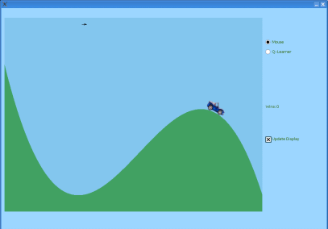

Car On
Hill Demo

This is a classic game for testing an agent. The idea is there's a car
that doesn't have enough power to drive directly over the hill. If the
agent is smart, it should eventually figure out that it can get the car
over the hill by rocking back and forth.
If you're in mouse mode, a human player controls the car with the
mouse. When the mouse is left of the little black arrow near the top,
the car goes in reverse. When the car is right of the little black
arrow, the car goes forward. Yeah, I know this a wierd interface,
but it's not the kind of game you're going to spend hours playing anyway,
so I'm not going to spend a lot of time improving it.
If you're in Q-learner mode, a Q-learner agent will try the problem. It
will eventually solve it, but it takes a really really really long
time. To speed things up a
bit, you can uncheck the "Slow" box. It goes a lot faster
when it doesn't have to keep redrawing the entire scene. When you
want to see what's going on again, just check the box again.